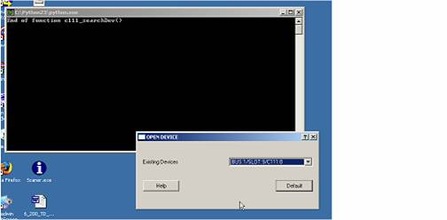
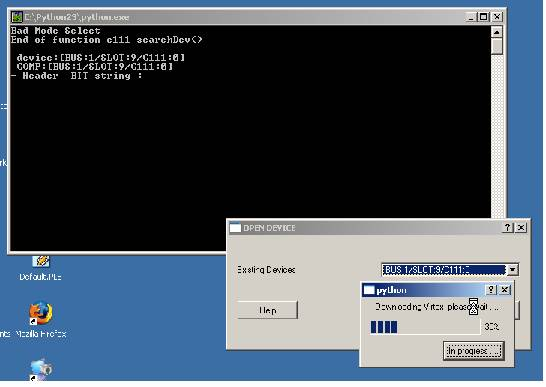
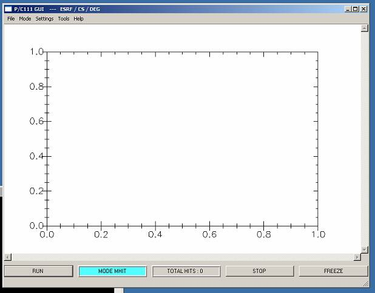
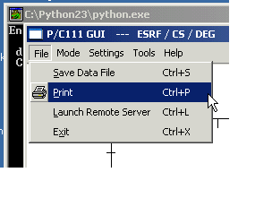
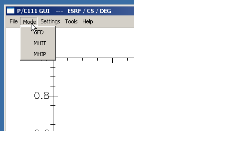
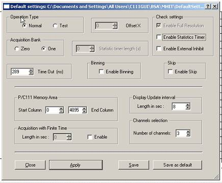
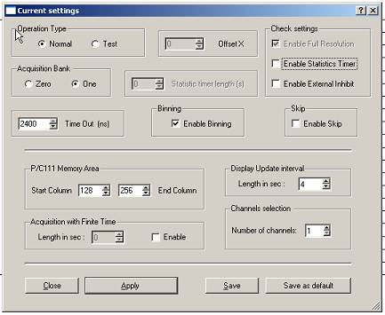
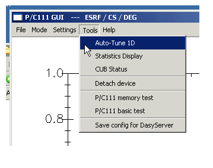
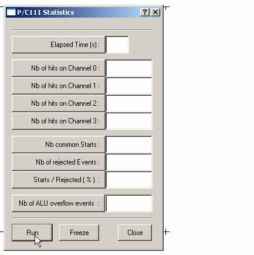
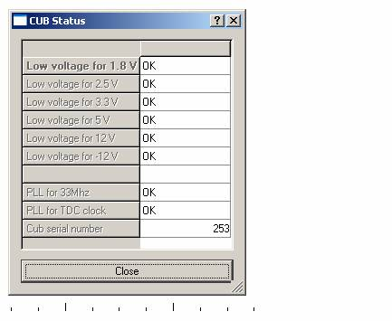

Startup:
When
launched, C111GUI-1D will popup a window with a list of existing C111 devices
found on the computer.

Choose
the device you want to use and click on the Default button. The device is not well could be badly
configured and the application will
download a GFD virtex file to the P/C111 FPGA. Wait until the download is finished.

Then the
main window will popup and one should have the following:

At this
time the application has loaded a default configuration and the last used
configuration. The last used configuration is the one saved automatically
when the exit item in the File menu is used to exit the appliction. The last
used configuration will also be the current configuration at this time. BUT
no configuration is automatically downloaded to the P/C111 at startup.
Hardware settings can be read from the hardware settings item in the Settings
menu.
Three
areas can be viewed. The menu area with menu bar and pull-down menus. The
graph area where P/C111 memory content will be plotted. The buttons area used
to manage the application run-time. Once configured the P/C111 is ready for
acquisitions and using the RUN/STOP/FREEZE
buttons users can plot memory content. The STOP button will stop the acquisition AND clear the P/C111 memory. The FREEZE button will only stop the acquisition without clearing the
memory. The MODE label reminds
about the actual mode in use ( MHIT/MHIP/GFD ). The TOTAL HITS label reminds for each acquisition loop the total
number of hits on the P/C111
_______________________________________
File menu:

With the
File menu sub-items, users can save the last plot into a data file, .data
extension. Such a file uses a speadsheet file format and could up-loaded with
Padi for exemple. Users can print the plot from screen to a printer, whenever
printers have been configured on the computer.
Users can
start (launch) the Dasy server from inside the application. This will freeze
the
GUI as
long as the server is alive. The current configuration will be saved for the
Dasy server in a specific directory AND as the last used configuration for
the application. For further explanations about the Dasy server refer to it’s
specific documentation in the help menu.
And users
can exit gracefully from the application. The exit will stop the P/C111
acquisition if still running and will save the current used configuration as
the last used one. This last used configuration will be loaded at the next
application startup.
Top
_______________________________________
Mode menu:

With the
mode menu users can change the mode used to operate the P/C111. Available
modes are MHIT, GFD, MHIP.
Each mode
has its own specifities and uses a different Virtex which must be downloaded
to the P/C111 FPGA. Wait until the virtex is downloaded. When done, the MODE
label will change accordingly to the choice made if no problem accured.
Top
_______________________________________
Settings menu:

With the
settings menu users can load a configuration from a file, and/or can display
in a popup window the last, default and current configuration. Once loaded a
configuration can be applied, saved and/or saved as the default
configuration. Users can also create a new configuration from scratch and can
display the hardware settings.
Users can
modify the defaults Dasy server parameters with the last menu item.
Modifying the Dasy server
parameters:
When
activated this menu item will popup the following dialog box:

The
server port is the network port the server will use to answer request from
network clients. The default is 12111. Be aware that changing the default
port implies that clients know the new port. Dasy server parameters are saved
in a file where the server will read them at startup.
Configurations:
When
loading a configuration from a file, or loading the default config, or the
last used config the file path will be displayed in the caption of the popup
window. When opening the current config or creating a new one no path will be
displayed in the caption of the popup window.
The same pannel will also be used to display hardware settings.


For each
mode ( GFD/ MHIT/ MHIP ) a different directory is used to store configuration
files ( with .cfg extension ). The application manages directories and files
when changing the mode used. Configuration files are text files and can be
edited by hand. Which is not a good
idea except for P/C111 experts.
The panel
used to display the content of a configuration shows applicable settings
according to the mode used. The pannel will control and manage users choices
in order to avoid as much as possible conflicts between possible settings.
For example when using a finite time for acquisitions, the display interval
will be managed by the pannel in order to be at least one second greater than
the finite time. Once the user has prepared a configuration he can apply it,
which means P/C111 parameters will be written in the board registers and
run-time parameters will be stored internally by the application. Or he can
save the configuration in a file with the save button, or he can save the
configuration as the default one, which will overwrite the the default
settings file with this one. Once applied and/or saved the user can close the
pannel.
Top
_______________________________________
Tools menu:

With the
tools menu users can request an auto-tune procedure. The application will
launch the c111magic program which will try throu rules and heuristics to
create an optimal tuning for the connected detector. The c111magic program
will run in the command msdos window joined to the GUI and users can follow
the steps of the c111magic program and any possible failure. Once done the
hardware settings created will be displayed in the usual configuration
pannel. The user will then do whatever he wants as with other configurations.
Using this tool can be a must for newcomers to wonderfull world of P/C111.
Users can
view statistics stored in P/C111 statistics registers. This tool can help to
tune manually the detector in order to have a maximum of hits on acquisition
channels. Users must first stop any running acquisition, then check the
Enable Statistics Timer in the current configuration pannel and give a
statistics timer length in seconds also in the current configuartion and
apply the new configuration. Then users can start the statistics display. The
following pannel will popup.

Users can
view the CUB status. The following pannel will be displayed.

Any main
problem should be visible in this pannel.
Users can
Detach/Attach the currently used P/C111 device which means closing the driver
session. This is done by the application each time another program is
launched to act on the P/C111. This option is a toggle and may be usefull to
start another program by hand and/or to reconnect the application when the
automatic reconnection has failed.
Usesr can
launch some tests on the P/C111 device. Testing the memory can be very long.
The basic test is really basic. These tests are performed via options of the
c111tst program which is launched in the msdos command window joined to the
GUI. Users will have to view the tests results in this window and strike any
key in order to give the P/C111 control back to the GUI.
Users can
save the current configuration as the Dasy server configuration. When the
Dasy server starts, it will load this configuration file from a specific
directory. The current configuration will be saved only if it has been
downloaded to the TDC. So the Users can exit the application and start the
server by hand. Refer to the Dasy server documentation for further
explanations.
Top
_______________________________________
|